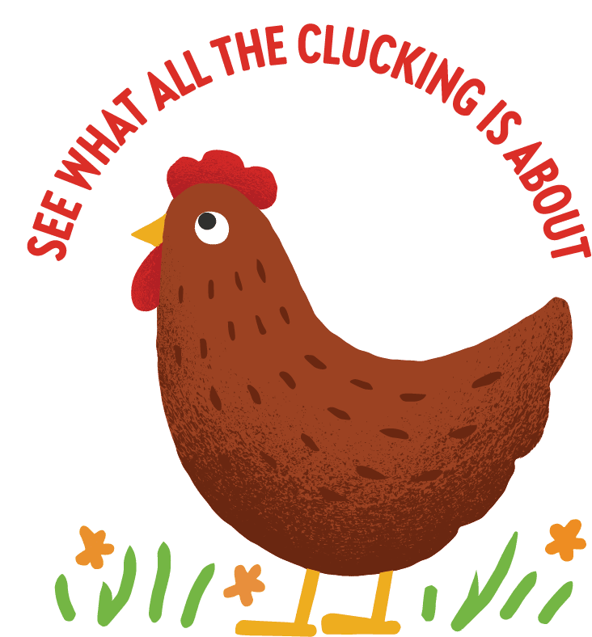

I love to eat Pho. Anything soup is my favorite comfort foods to eat. I like to add lots of lime to my soup base to give the broth more flavor. Soup is amazing during the cold days and is very filling.
My favorite animal would have to be chickens. I had them as pets and they are very intelligent. Not many people see them as pets but they have very unique personalities that make the experience raising chickens fun. They also provide you with eggs!
I love mushrooms. I don't think you can go wrong with more mushrooms. I also prefer doughy pizza instead of thin crust.
I do not like pineapple on pizza. I think it's criminal to add that to pizza!

Check out more information from Vital Farms to learn about their chicken business: Vital Farms!